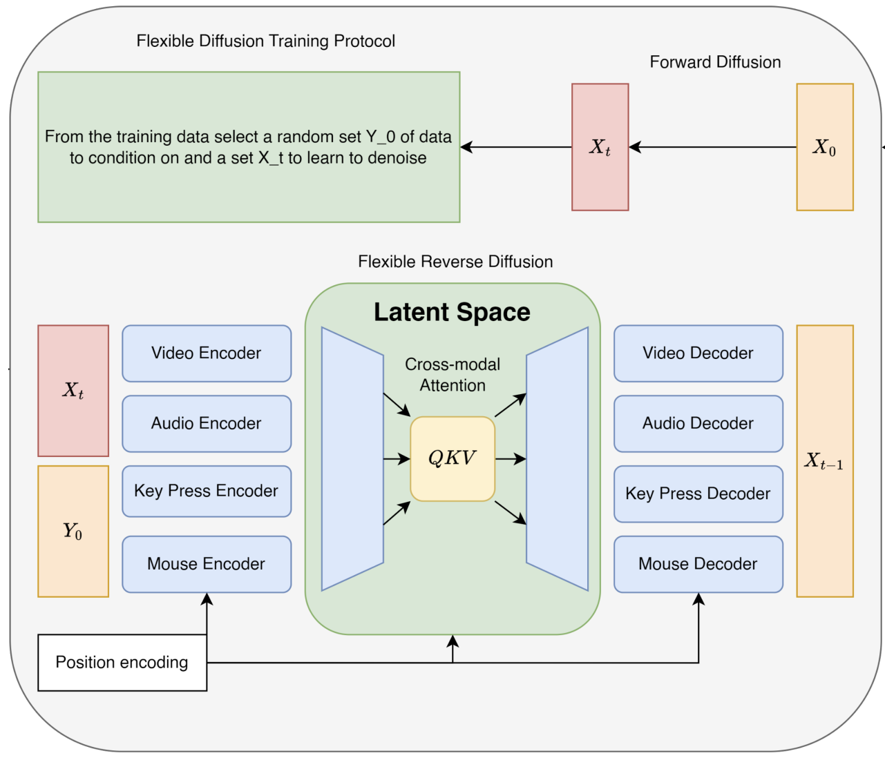

Exploring Machine Learning in Photonics: A Sample Post
Introduction
This is a sample blog post demonstrating the rich markdown formatting capabilities of our 11ty-powered blog. You can write in simple markdown and it will be beautifully rendered with your existing site styling.
Rich Content Support
Images
You can easily embed images with captions:

Videos
Videos are also supported (though this is a placeholder):
Code Blocks
Here's some Python code with syntax highlighting:
import numpy as np
import matplotlib.pyplot as plt
def photonic_simulation(wavelength, refractive_index):
"""
Simulate light propagation in a photonic crystal
"""
k = 2 * np.pi / wavelength
return k * refractive_index
# Example usage
wavelengths = np.linspace(400, 800, 100) # nm
results = [photonic_simulation(w, 1.45) for w in wavelengths]
plt.plot(wavelengths, results)
plt.xlabel('Wavelength (nm)')
plt.ylabel('Wave vector')
plt.title('Photonic Crystal Dispersion')
plt.show()Mathematical Expressions
You can include inline code like numpy.array() or tensorflow.keras.Model() easily.
Blockquotes
"The best way to predict the future is to invent it." - Alan Kay
This quote resonates with my approach to combining machine learning with photonics research.
Lists and Structure
Here are some key areas I'm exploring:
-
Neural networks for photonic design
- Optimization of waveguide structures
- Inverse design problems
- Real-time parameter tuning
-
Signal processing applications
- Pattern recognition in optical signals
- Noise reduction algorithms
- Adaptive filtering techniques
-
Future directions
- Integration with quantum photonics
- Edge computing applications
- Sustainable photonic systems
Footnotes and Citations
Machine learning has revolutionized many fields[1], and photonics is no exception. Recent advances in deep learning[2] have opened new possibilities for optical system design.
The intersection of these fields presents unique challenges and opportunities[3].
Conclusion
This blog setup allows for rich, academic-style writing with beautiful formatting that matches your existing site design. The markdown format makes writing posts simple and enjoyable.
LeCun, Y., Bengio, Y., & Hinton, G. (2015). Deep learning. Nature, 521(7553), 436-444. ↩︎
Goodfellow, I., Bengio, Y., & Courville, A. (2016). Deep learning. MIT Press. ↩︎
Molesky, S., Lin, Z., Piggott, A. Y., Jin, W., Vucković, J., & Rodriguez, A. W. (2018). Inverse design in nanophotonics. Nature Photonics, 12(11), 659-670. ↩︎